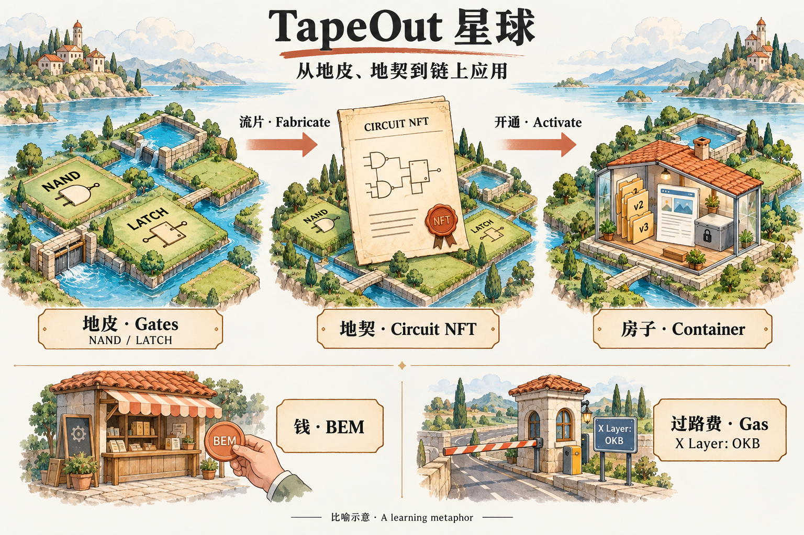

新手入门 / TAPEOUT 星球
TapeOut 星球：从地皮、地契到链上应用
用一颗星球上的土地、水利和房子，串起门、电路、容器，以及 BEM 和 Gas。第一次接触 TapeOut，可以从这个故事开始。

01 · 先认识这颗星球
在 TapeOut 星球上，有好几个“国家”——处理器。国家坐落在区块链之上，例如 X Layer；各自的规则写在处理器合约里。要理解一个国家怎么玩，先看它的合约规则。
这里的“国家”“土地”“房子”都是帮助理解的比喻。它们分别指向链上的处理器、电路材料和容器，并不是现实中的国家、土地或建筑。
02 · 地皮：NAND 与 LATCH
土地是一小块一小块买来的，叫“地皮”，对应的是门。地皮上有两种水利设施：
NAND 像一道水闸。把有水理解成 1、没水理解成 0：只有两路来水都有水时，它才关闸、输出 0；其他情况下都放水、输出 1。
LATCH 像一个蓄水池。这一轮放出上一轮存下的水，再把这一轮的来水存起来，留到下一轮。它让电路能记住上一拍的状态。
在原文描述的规则下，两种材料的铸造价相同。实际价格与参数要查看对应处理器的当前规则。
03 · 地契：把图纸变成电路
把几块地皮组合成一块田，就可以去办“地契”——流片，生成电路 NFT。办地契时要交一张水利图纸，也就是网表：哪些闸连着哪些渠、从哪里进水、从哪里出水，都要画清楚。
“国土局”就是处理器合约。它按规则检查图纸：连接必须符合网表约束，反馈回路需要经过 LATCH。审核通过后，所用的门被烧掉，换成一张代表电路的地契。这里的流片是链上的电路创建过程，不是现实晶圆制造。
地契上记录着材料规模 NL（NAND 与 LATCH 的总数）和门牌号，例如 1.2.344。图纸与电路信息保存在链上，别人可以查；地契在谁手里，谁就是这块电路的持有人。
这块田可以“干活”：输入水流，经一道道闸得到输出，就是电路求值。一次运行叫一拍；LATCH 把状态留给下一拍。测试向量则像竣工验收：给定输入，看输出是否符合题目要求。规模更大不自动等于设计更好或收益更高。
04 · 房子：电路容器与链上文件
有了地契，可以在田边盖“房子”——开通容器。容器地址由电路推导，和电路绑定；也可以只持有电路，不开通容器。
往房子里搬东西，就是上传文件。布置一间店面，可以理解为发布网站；放一个上锁的箱子，就是保存加密文件。
墙像玻璃：公开文件能被别人读取。私密内容应先加密，再上传，并妥善管理密钥。以接收方公钥加密的内容，需要对应的私钥才能解开。
文件以追加版本的方式更新。把新版本放进去，不等于从链上擦掉旧版本；读取器按照相应规则选择版本。不要把“页面不再显示”理解为“旧内容已经删除”。
房子还可以有收银台。容器能接收资产。向容器支付和直接向当前持有人支付是不同的目标；实际支持的资产与操作，以合约和应用为准。
05 · 地皮、钱和过路费，要分清
| 故事中的东西 | 对应概念 | 用在哪里 |
|---|---|---|
| 地皮 | NAND / LATCH | 制造电路的材料；流片时消耗。 |
| 钱 | BEM | 可转账、持有，也可用于生态中的奖励或应用支付。 |
| 过路费 | Gas | 提交链上交易所需的网络费用；X Layer 使用 OKB 支付。 |
给店家付钱，与给网络交过路费，是两件事。比如把 BEM 转给一个容器，收款方得到 BEM，发起交易的人另外支付网络 Gas。只读访问不等同于发送交易。
06 · 转让地契，以及保管好印章
地契可以转让，也就是转移电路 NFT。电路换了持有人，关联容器的控制权也随之变化；已经写入链上的文件不会因为换主人而消失。
钱包签名像业主的印章：别人可以贴一张“这是我的”，但不能凭这句话代替你的签名。私钥需要自己妥善保管，协议不能替你补办丢失的私钥。
一个人可以在不同处理器上持有多个电路。地契的用途也不只“盖房子”：它还可以作为身份、权限凭证，或者可转让的会员卡与门票，具体能力取决于使用它的应用。
07 · 再回来看生态产品
把基础概念放回产品里，就容易理解它们各自负责什么：